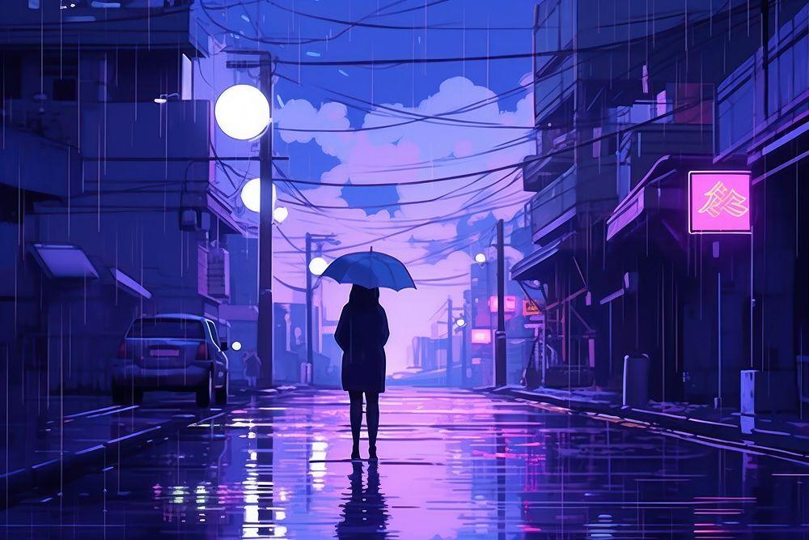

ZULL LYNIEE · PIXEL VAULT
Sudah Siap Membaca?
Di Bawah Langit yang Kehilangan Warna
Sebuah kisah tentang pertemuan, kenangan, dan perasaan yang belum sempat diungkapkan.
PIXEL VAULT · AKHIR BAGIAN PERTAMA
Di Bawah Langit yang
Kehilangan Warna
From every perspective, I’m still the one to blame.
Cerita ini belum selesai. Mungkin jawabannya ada pada bab berikutnya.